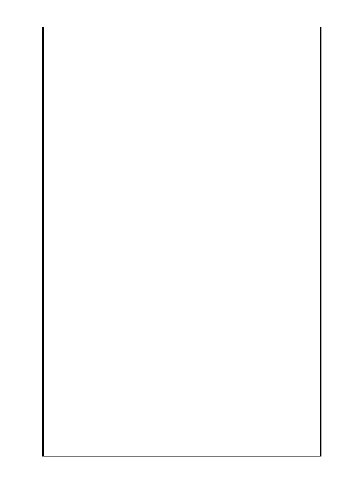

我們小市民們非常地感佩。
小市民聽到市長您為我們信義捷運線，從「象山站」東延至
「廣慈博愛特區」，都高興地說：您總算為我們小市民要做
乙件「好事」。但聽說其「造價」每公里約為「60 多億」，
幸好有「中央」補助。不管預算如何來，都是人民的「納稅
錢」，本人建請 市長您將每一分錢都用在「最高效益－刀口」
陳 情 理 由 上，不能用在「刀背」上，否則，寧可不作、不用，才對得
起「良心」，不是僅求門面。但興建三座「捷運站體」：「R4
站」南、北兩側及「R3 站」，如依「都市計畫委員」為了求
方便，建議「捷運局」採最少面積，重新變更，將完整的大
區域，規劃成零碎小區塊，真令百姓「傻眼」（詳如附件 l）。
政府花費如此「鉅額公帑」，又用引起民怨的「徵收手段」，
興建「聯合開發及捷運站體」，理應採取「完整」街廓的規
劃。現在「北區」僅「徵收五層樓」，放棄整塊「松台公寓」，
理由是「產權複雜」，如果這樣就放棄，那如何解民於「倒
懸」？「南區」則分割「東側」部分作「聯合開發」，卻另
又「徵收」信義路六段 48 號、50 號為「通風井」。把信義
路六段 52 號、54 號及後棟（76 巷 2－18 號）共 40 戶住家不
予列入「聯合開發」，理由竟是為了「中間七層樓」日後「都
更」，這樣「犧牲」我們 40 戶住家的權益，去遷就「中間七
層樓」的 14 戶，不但有違「比例原則」，更是沒有「天理」！
「中間七層樓」有「捷運容積獎勵」都不參加「聯合開發」，
遑論僅是「都更」，他們會「願意」嗎？我們南、北兩側的
地主，都樂意參加捷運「聯合開發及捷運站體」興建（詳如
附件 2）。
祈請 市長您務必聽取並成全「小市民」的心聲，迅速下令「捷
運局」成立「專案小組」，要求召開「跨局處」會議：討論
重新規劃，提高「容積獎勵」，「捷運容獎」，讓南、北兩
區「整個」街廓，加入「聯合開發及捷運站體」，不但可以
解決「南區」未被劃人「聯合開發」的 40 戶地主的「反彈」
和「民怨」；也可解決「北區」「松台公寓」50 年來產權糾
紛。更可以改善台北市市容、景觀，讓台北市躍身為「國際
都市」，帶動周邊的商業生機，繁榮附近的經濟行為。
市長先生閣下：當然，您會認為小市民「不在其位，不知困
難」，那就請問：「高鐵」各站，當初也是「鳥不生蛋」，
之後經變更，各站可為「商業區」，「新北市」政府「捷運」
或「都更」都可以「放寬」，難道我們台北市「首都市長」
比他們矮嗎？「2016」市長先生閣下，您就要更上一層樓；
只有「台北市」仁愛路才是直通「大位」的唯一「王道」。
「捷運用地」是依都市計畫，先變更為「交通用地」再變更
- 96 -